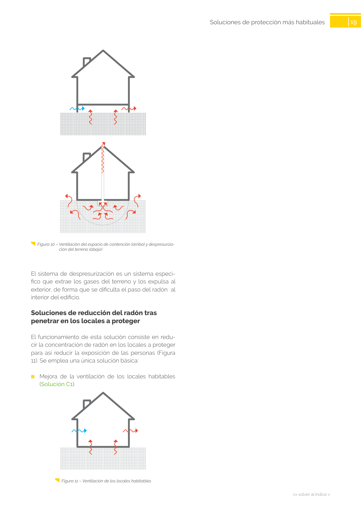

GUIA · Soluciones de reducción del radón tras penetrar en los locales a proteger · versión sin-fecha · capa guia
Formatos: JSON compacto · Markdown · PDF fuente
Ámbito del documento · texto del ámbito · documento y tablas
Tipo: tablas, figuras · nivel 3 · sección estimada: Capítulo · padre: a0050
Soluciones de reducción del radón tras penetrar en los locales a proteger penetrar en los locales a proteger El funcionamiento de esta solución consiste en redu cir la concentración de radón en los locales a proteger para así reducir la exposición de las personas (Figura 11). Se emplea una única solución básica: ■ Mejora de la ventilación de los locales habitables (Solución C1). Figura 11 – Ventilación de los locales habitables

PDF fuente redistribuible: copia fiel enlazada en esta página (SHA256 verificado).